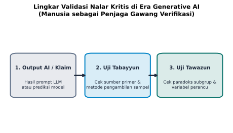

8 Menavigasi Dunia yang Dipenuhi Algoritma
“Di era kecerdasan buatan, tantangan terbesar kemanusiaan bukanlah bagaimana memproduksi lebih banyak data atau mempercepat algoritma komputasi, melainkan bagaimana memastikan bahwa hati nurani dan akal sehat manusia tetap memegang kendali atas arah masa depan peradaban.”
8.1 Fajar Baru dan Banjir Otomatisasi
Kita sedang hidup di tengah fajar sebuah zaman baru yang belum pernah disaksikan oleh generasi-generasi sebelumnya. Kehadiran kecerdasan buatan generatif (Generative AI), model bahasa besar (Large Language Models), dan sistem automasi pintar telah mengubah wajah peradaban dalam sekejap mata. Aktivitas intelektual yang dahulunya membutuhkan kerja keras berpekan-pekan oleh tim analis senior kini dapat diselesaikan oleh algoritma komputer dalam hitungan detik.
Cukup dengan mengetikkan beberapa kalimat instruksi sederhana (prompt) ke dalam layar ponsel pintar, sebuah sistem AI dapat merangkum ratusan dokumen kebijakan publik, menghitung korelasi ribuan variabel, serta menggambar infografis warna-warni yang tampak sangat rapi dan berwibawa.
Namun, di balik pesona keajaiban teknologi ini, sebuah ancaman eksistensial yang sunyi sedang mengintai peradaban manusia: erosi nalar kritis. Ketika mesin dapat menyajikan jawaban instan yang terdengar fasih dan meyakinkan, manusia perlahan terbuai untuk menyerahkan kemerdekaan berpikirnya kepada algoritma.
Kita mulai mempercayai ringkasan otomatis mesin tanpa memeriksa dari mana data itu dipanen. Kita menelan mentah-mentah grafik rekomendasi bisnis AI tanpa menanyakan apakah ada bias yang tersembunyi di balik data pelatihannya. Di ruang sidang pemerintahan, korporat, hingga lembaga pendidikan, angka-angka luaran kecerdasan buatan mulai disembah sebagai kebenaran mutlak yang tak terbantahkan.
Di titik persimpangan sejarah inilah, literasi data menemukan peran tertingginya. Literasi data bukan lagi sekadar keterampilan teknis berhitung bagi mahasiswa jurusan matematika atau ilmu komputer, melainkan benteng pertahanan terakhir bagi akal sehat manusia. Tanpa literasi data yang berakar pada nurani etika, manusia modern berisiko menjadi tawanan sukarela dari mesin yang mereka ciptakan sendiri.
8.2 Membongkar Tiga Ilusi Algoritmik Modern
Untuk menavigasi rimba digital yang semakin pekat, kita harus memiliki keberanian untuk menyingkap tabir di balik cara kerja algoritma. Ada tiga ilusi sistemik yang paling sering mengaburkan kejernihan pandang masyarakat di era kecerdasan buatan:
8.2.1 Gelembung Filter dan Ruang Gema (Filter Bubbles and Echo Chambers)
Algoritma linimasa media sosial dan mesin pencari modern tidak dirancang oleh para insinyur teknologi untuk mencerdaskan kehidupan bangsa atau menyajikan kebenaran objektif. Algoritma tersebut dirancang untuk satu tujuan komersial tunggal: memaksimalkan keterikatan pengguna (user engagement) agar durasi menatap layar semakin lama demi menjual ruang iklan.
Untuk memikat perhatian kita, algoritma secara terus-menerus mempelajari riwayat klik, durasi tontonan, dan kecenderungan emosional kita. Algoritma kemudian menyajikan informasi dan grafik yang secara khusus mengonfirmasi keyakinan serta prasangka awal kita (confirmation bias).
Jika seseorang memiliki kecurigaan terhadap kelompok tertentu, layar ponselnya akan terus-menerus dibanjiri oleh infografis yang memojokkan kelompok tersebut, sementara bukti-bukti tandingan yang menyejukkan disembunyikan ke dasar jurang digital. Terciptalah ruang gema (echo chamber): manusia merasa bahwa seluruh dunia menyetujui pendapatnya, padahal ia sedang terkurung di dalam gelembung cermin yang direkayasa oleh kode perangkat lunak.
8.2.2 Bias Data Latih (Training Data Bias)
Banyak orang keliru menganggap bahwa kecerdasan buatan adalah hakim yang sepenuhnya netral dan bebas dari prasangka manusia. Faktanya, kecerdasan buatan tidak jatuh dari langit hampa; kecerdasan buatan dilatih menggunakan tumpukan data historis yang ditulis oleh manusia di internet selama puluhan tahun terakhir.
Jika data historis tersebut memuat prasangka rasial, ketimpangan gender, bias geografis, atau diskriminasi sosial ekonomi, maka sistem AI akan menyerap, mereplikasi, dan mengamplifikasi ketidakadilan tersebut dalam bentuk rekomendasi kuantitatif yang tampak objektif.
Sebagai contoh nyata, sebuah algoritma pemeringkat kredit bank atau penyaring lamaran kerja di negara maju terbukti secara konsisten memberi skor lebih rendah kepada pelamar dari kelompok minoritas atau perempuan, bukan karena mereka kurang kompeten, melainkan karena data historis masa lalu mencatat ketimpangan peluang yang dialami kelompok tersebut. Menelan rekomendasi algoritma tanpa memeriksa keadilan data latihnya adalah bentuk kezaliman modern yang berkedok efisiensi teknologi.
8.2.3 Halusinasi Statistik dan Kepalsuan yang Fasih (Fluent Hallucinations)
Kelemahan paling berbahaya dari model bahasa besar saat ini adalah ketidakmampuannya membedakan fakta empiris dari kebenaran probabilitas bahasa. Model AI dirancang untuk memprediksi kata-kata berikutnya yang terdengar paling masuk akal secara tata bahasa (plausible output), bukan untuk melakukan verifikasi kebenaran lapangan.
Ketika ditanyai sebuah pertanyaan sulit mengenai data yang tidak diketahuinya, sistem AI cenderung menghasilkan jawaban yang terdengar yakin meskipun informasinya keliru atau belum terverifikasi. Sistem AI dapat mengarang data: menciptakan persentase survei fiktif, mengutip nama jurnal ilmiah yang tidak pernah terbit, dan menyajikan grafik yang tampak meyakinkan dari angka-angka yang murni merupakan produk imajinasi mesin. Verifikasi akhir selalu berada pada bukti eksternal, bukan pada pengakuan model itu sendiri. Kepalsuan yang disampaikan dengan nada bicara yang sopan dan fasih adalah bentuk kebohongan yang paling sulit dideteksi oleh mata awam.
8.2.4 Triad Kerusakan Algoritmik: Opasitas, Skala, dan Dampak
Sebagaimana diuraikan oleh matematikawan Cathy O’Neil dalam karyanya mengenai senjata kehancuran matematis, sebuah model algoritma yang berbahaya selalu memiliki tiga ciri khas: 1. Opasitas (Opacity): Cara kerja dan pembobotan variabel di dalam model tertutup rapat dalam kotak hitam (black box), sehingga publik atau korban keputusan algoritma tidak dapat menuntut penjelasan rasional mengapa skor mereka rendah. 2. Skala (Scale): Model tersebut diterapkan secara masif kepada jutaan orang sekaligus melalui sistem komputasi awan, sehingga kekeliruan kecil pada satu baris kode dapat merugikan hajat hidup orang banyak dalam tempo sekejap. 3. Dampak Merusak (Damage): Model tersebut memberikan hukuman sistemik yang bersifat swasembada (self-fulfilling prophecy), di mana orang miskin dinilai berisiko tinggi sehingga bunga pinjamannya dinaikkan, yang pada akhirnya memastikan mereka semakin terpuruk dalam kemiskinan.
Membekali generasi muda dengan literasi data adalah ikhtiar untuk melucuti opasitas kotak hitam tersebut dan mengembalikan transparansi ke dalam ruang publik.
8.3 Lingkar Validasi Kritis Manusia
Bagaimana kita memposisikan diri di hadapan tsunami otomatisasi ini? Jawabannya tegas: manusia tidak boleh menyerahkan kedaulatan nalar kepada mesin. Kita harus merebut kembali posisi luhur kita sebagai penjaga gawang kebenaran (validation gatekeepers).
Di era kecerdasan buatan, nilai manusia tidak lagi diukur dari seberapa cepat ia memproses data mentah, melainkan dari seberapa tajam ia menginterogasi luaran mesin. Kita harus menerapkan sebuah protokol pengujian sistemik yang kita sebut sebagai Lingkar Validasi Nalar Kritis di Era Generative AI, sebagaimana dipetakan dalam Figure 8.1.

Sebagaimana tampak pada Figure 8.1, setiap kali kita menerima klaim kuantitatif atau grafik yang dihasilkan oleh kecerdasan buatan, kita wajib melewatkannya melalui dua lapis penyaringan etis sebelum mengubahnya menjadi keputusan tindakan:
8.3.1 Lapis 1: Uji Tabayyun (Verifikasi Fakta dan Sumber Primer)
Pada lapisan pertama, kita menguji keshahihan material data: - Apakah sistem AI mencantumkan tautan sumber data primer yang nyata dan dapat diverifikasi secara independen? - Apakah angka persentase tersebut benar-benar ada dalam laporan resmi lembaga rujukan, ataukah sekadar angka halusinasi probabilitas teks? - Bagaimana metodologi penarikan sampel yang mendasari data tersebut di dunia nyata?
Kita juga dapat menggunakan teknik penyelidikan prompt tandingan (adversarial prompt verification). Alih-alih menerima jawaban pertama mesin begitu saja, kita dapat menantang balik sistem AI: “Tunjukkan batasan metodologi, potensi bias sampel, dan variabel perancu yang Anda abaikan dalam analisis ini.” Anda akan terkejut melihat betapa cepatnya sistem AI mengakui kelemahan dan keterbatasan analisisnya sendiri ketika dipaksa untuk bersikap transparan.
8.3.2 Lapis 2: Uji Tawazun (Evaluasi Keadilan dan Konteks Subkelompok)
Pada lapisan kedua, kita menguji keadilan sistemik dan struktur data: - Apakah rekomendasi AI menyembunyikan variabel perancu yang berpotensi memicu Paradoks Simpson? - Apakah model memperlakukan seluruh subkelompok secara adil dan proporsional, ataukah mengorbankan hak kelompok rentan demi memaksimalkan metrik rata-rata? - Apakah asumsi yang ditanamkan dalam prompt perintah kita sendiri sudah netral, ataukah secara sadar menggiring mesin untuk membenarkan kesimpulan sepihak?
Hanya ketika sebuah analisis kuantitatif telah lolos dari uji tabayyun fakta dan uji tawazun keadilan, data tersebut layak dijadikan pijakan bagi pengambilan keputusan yang bermartabat di tengah masyarakat.
8.4 Integrasi Kurikulum Merdeka, P5, dan Profil Lulusan
Bagi dunia pendidikan nasional di Indonesia, tantangan disrupsi kecerdasan buatan ini bertepatan dengan momentum transformasi kurikulum melalui implementasi Kurikulum Merdeka. Salah satu pilar paling strategis dalam kurikulum ini adalah Projek Penguatan Profil Pelajar Pancasila (P5).
Perlu dicatat bingkai waktunya: sejak tahun ajaran 2025/2026, Peraturan Menteri Pendidikan Dasar dan Menengah Nomor 13 Tahun 2025 memperkenalkan kerangka penerus bernama Profil Lulusan dengan delapan dimensi: keimanan dan ketakwaan kepada Tuhan Yang Maha Esa, kewargaan, penalaran kritis, kreativitas, kolaborasi, kemandirian, kesehatan, dan komunikasi (Kementerian Pendidikan Dasar dan Menengah RI 2025). Regulasi ini bukan kurikulum baru (Kurikulum 2013 dan Kurikulum Merdeka tetap berjalan), melainkan penyempurnaan yang justru meneguhkan tesis buku ini: penalaran kritis kini menjadi kompetensi lulusan yang eksplisit dan terukur.
Selama ini, banyak pihak masih memandang literasi kuantitatif sebagai urusan mata pelajaran eksakta yang kering dan terisolasi dari pembentukan karakter moral. Ini adalah pandangan sempit yang harus segera diakhiri. Etika data dan nalar kritis adalah instrumen paling efektif untuk mewujudkan profil pelajar yang tangguh di era digital.
Pendidikan literasi data etis dapat diintegrasikan secara organik ke dalam dua dimensi utama Profil Pelajar Pancasila melalui tiga tema projek nyata:
8.4.1 Tema Gaya Hidup Berkelanjutan: Audit Jejak Karbon Sekolah
Siswa tidak sekadar membaca teori perubahan iklim, melainkan mengumpulkan data riil mengenai timbulan sampah plastik di kantin sekolah atau penggunaan energi listrik harian. Siswa belajar membuat grafik sebaran waktu, mengidentifikasi jam-jam pemborosan energi, dan mempresentasikan solusi berbasis bukti kepada kepala sekolah. Dalam projek ini, dimensi bernalar kritis diasah seraya menumbuhkan rasa tanggung jawab menjaga bumi ciptaan Tuhan.
8.4.2 Tema Suara Demokrasi: Menyelenggarakan Jajak Pendapat Osis yang Adil
Ketika sekolah menyelenggarakan pemilihan ketua OSIS atau evaluasi ekstrakurikuler, siswa dilatih untuk merancang survei opini publik yang memenuhi kaidah representasi acak (stratified random sampling). Siswa mempraktikkan bagaimana merumuskan pertanyaan kuesioner yang netral tanpa bias penggiringan, menghitung margin kesalahan, dan menyajikan hasil jajak pendapat dengan diagram batang berbasis nol. Mereka belajar bahwa demokrasi yang sehat membutuhkan kejujuran data (Amanah) dan kehati-hatian dalam mempublikasikan klaim (Tabayyun).
8.4.3 Tema Rekayasa dan Teknologi: Membedah Bias Algoritma Media Sosial
Siswa tingkat menengah diajak untuk mengamati linimasa akun media sosial masing-masing, mencatat jenis konten dan iklan yang disodorkan oleh algoritma, lalu mendiskusikan mengapa rekomendasi untuk setiap siswa sangat berbeda. Projek ini membuka mata generasi muda mengenai keberadaan gelembung filter (filter bubbles) dan melatih mereka untuk secara sadar mencari sudut pandang tandingan agar nalar mereka tidak terpenjara oleh keseragaman algoritma.
Ketika sekolah, madrasah, dan perguruan tinggi merancang projek P5 berbasis data riil, matematika dan etika bersatu padu. Belajar tidak lagi terasa laksana siksaan hafalan rumus, melainkan menjelma menjadi petualangan pengabdian yang memuliakan kehidupan masyarakat.
8.5 Epilog, Menjaga Nurani di Balik Angka
Perjalanan kita menelusuri delapan bab dalam buku ini membawa kita pada sebuah pemahaman pamungkas: angka, tabel, dan grafik pada hakikatnya hanyalah simbol-simbol visual yang diciptakan manusia untuk menangkap denyut kehidupan.
Di balik angka persentase kemiskinan yang dingin di lembar laporan pemerintah, ada jutaan kepala keluarga yang sedang memeras keringat di bawah terik matahari demi sesuap nasi anak-anak mereka.
Di balik angka rata-rata nilai ujian yang diperebutkan di peringkat sekolah, ada anak-anak bangsa dengan beragam bakat terpendam yang sedang mencari jati diri dan berharap dihargai keunikannya.
Di balik kurva mortalitas di rumah sakit rujukan, ada nyawa manusia yang berharga, ada doa-doa yang dipanjatkan di keheningan sepertiga malam oleh keluarga yang mencemaskan kesembuhannya.
Inilah pembeda hakiki antara kecerdasan mesin dengan hikmah budi pekerti manusia: mesin mampu menghitung manusia, tetapi hanya manusia yang mampu memanusiakan hitungan. Menjadikan angka sebagai pelayan kemanusiaan, bukan majikan yang memperbudak nurani, adalah misi peradaban tertinggi yang harus kita emban bersama.
Literasi data sejati pada akhirnya adalah literasi kewargaan (civic literacy). Seorang warga negara yang melek data adalah benteng bagi demokrasi yang sehat. Ia tidak mudah diadu domba oleh infografis provokatif saat pesta demokrasi. Ia tidak gampang tergiur oleh janji-janji manis investasi bodong berkedok teknologi finansial. Ia berani mempertanyakan transparansi anggaran publik di balai desa, dan ia mampu mendampingi anak-anaknya menavigasi rimba kecerdasan buatan dengan tenang dan percaya diri.
Keterampilan nalar ini bekerja nyata di empat panggung kehidupan kita sehari-hari:
Pertama, di ruang keluarga, orang tua yang kritis tidak lekas panik ketika grup percakapan keluarga dibanjiri grafik lonjakan penyakit musiman tanpa konteks penyebut populasi. Mereka membimbing anak-anak membedakan sensasi kabar burung media sosial dari rilis berkala kementerian kesehatan.
Kedua, di ruang kelas sekolah dan madrasah, guru menggeser proses pembelajaran dari sekadar menghitung rumus mekanis menjadi dialog penemuan pola. Murid diajak mengumpulkan data suhu lingkungan sekitar atau memantau pola tabungan kelas, menjadikan angka sebagai sarana menumbuhkan empati sosial.
Ketiga, di ruang rapat perkantoran dan industri, seorang manajer profesional menolak manipulasi visual yang memperindah grafik pertumbuhan omzet yang lesu. Ia menuntut kejujuran garis tren berbasis nol dan keberanian menyajikan variasi data apa adanya di hadapan dewan direksi.
Keempat, di ruang publik kewargaan, masyarakat aktif mengawal kebijakan publik dengan memeriksa distribusi bantuan sosial dan alokasi anggaran pembangunan daerah, memastikan setiap rupiah uang rakyat dipertanggungjawabkan secara transparan.
Ketika kita berdiri di hadapan layar monitor yang memancarkan grafik hasil racikan algoritma tercanggih, ingatlah selalu tiga kompas moral yang telah kita pelajari bersama sepanjang buku ini: - Bawalah selalu lentera Tabayyun: tanyakan perawinya, uji kesahihan sumbernya, periksa ukuran sampelnya, dan telitilah metodologinya sebelum mempercayainya. - Tegakkan selalu timbangan Amanah: sajikan fakta apa adanya, jangan pernah memotong sumbu timbangan untuk membesarkan diri sendiri, dan jangan menyembunyikan variabel perancu yang dapat menyesatkan sesama. - Rawatlah selalu neraca Tawazun: pandanglah fenomena secara seimbang dan proporsional, hindari generalisasi kasar yang menzalimi subkelompok minoritas, dan ingatlah bahwa di balik setiap fluktuasi jangka pendek selalu ada keteraturan agung yang sedang bekerja.
Marilah kita melangkah ke masa depan dengan kepala tegak dan hati yang jernih. Jangan pernah silau oleh grafik yang gemerlap, jangan pernah gentar oleh formula yang tampak rumit, dan jangan pernah menyerahkan kedaulatan akal budi kita kepada ilusi mesin kecerdasan buatan. Jadilah generasi yang merdeka: generasi yang tidak sekadar pandai berhitung, melainkan generasi yang berani menegakkan kebenaran, keadilan, dan kasih sayang di balik setiap angka.